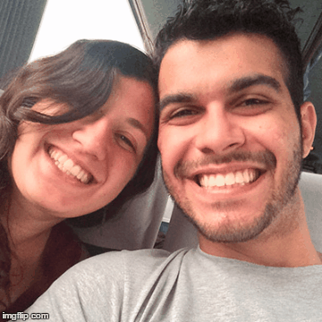

Larissa
Quis usar um pouquinho do que eu sei fazer pra te surpreender. Espero que tenha consigo dessa vez, assim como você tem me surpreendido nesses últimos dias.
Eu sei que essa última semana não foi fácil. E sei que teremos diversos dias assim, díficeis também. Mas tudo que eu peço pra ti, e pra Deus também, é paciência pois dias melhores sempre virão pra nos acalmar! E que o nosso amor seja muito maior do que tudo isso, e muito forte pra superar qualquer coisa.
Esse primeiro ano de namoro foi simplesmente maravilhoso, sensacional. Eu nunca senti nada parecido do que eu sinto com você. E isso só me faz querer mais ainda construir minha família cobtigo!
Ah como eu gosto de você. Se eu te falar que meu amor por ti só aumenta a cada dia, você acreditaria?
Obrigado pela parceria. Obrigado pela amizade. Obrigado por ser tão boa pra mim. Obrigado pelas risadas. Obrigado pelo carinho. Obrigado por ser você. Obrigado por ser tão parecida comigo e ao mesmo tempo tão diferente de mim. Enfim, muito obrigado por tudo.
Eu. Amo. Vc. Tá?
